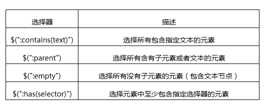

基本筛选选择器针对的都是元素DOM节点，如果我们要通过内容来过滤，jQuery也提供了一组内容筛选选择器，当然其规则也会体现在它所包含的子元素或者文本内容上
内容过滤器描述如下表：

注意事项：
:contains与:has都有查找的意思，但是contains查找包含“指定文本”的元素，has查找包含“指定元素”的元素
如果:contains匹配的文本包含在元素的子元素中，同样认为是符合条件的。
:parent与:empty是相反的，两者所涉及的子元素，包括文本节点
内容筛选器
:contains/:has
:parent/:empty